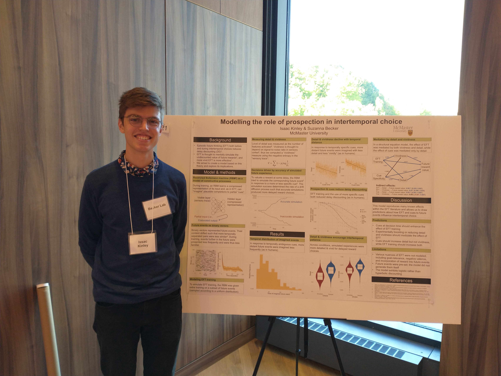

I am a PhD candidate at McMaster University supervised by Dr Sue Becker. My research investigates episodic future thinking and the role it can play in curbing temporal discounting. You can reach me at kinleyid@mcmaster.ca.
Web-based research code: I have written a number of tools for web-based research that integrate with jsPsych. A full list of these tools, including demonstrations and links to source code/preprints, can be found here.
PuPl: A few years ago, I wrote a graphical tool called "PuPl" for preprocessing pupillometry data. The paper describing PuPl was eventually published in Behaviour Research Methods. If you would like to use the tool, the best place to start is the GitHub page, where you can download the source code and read the manual.